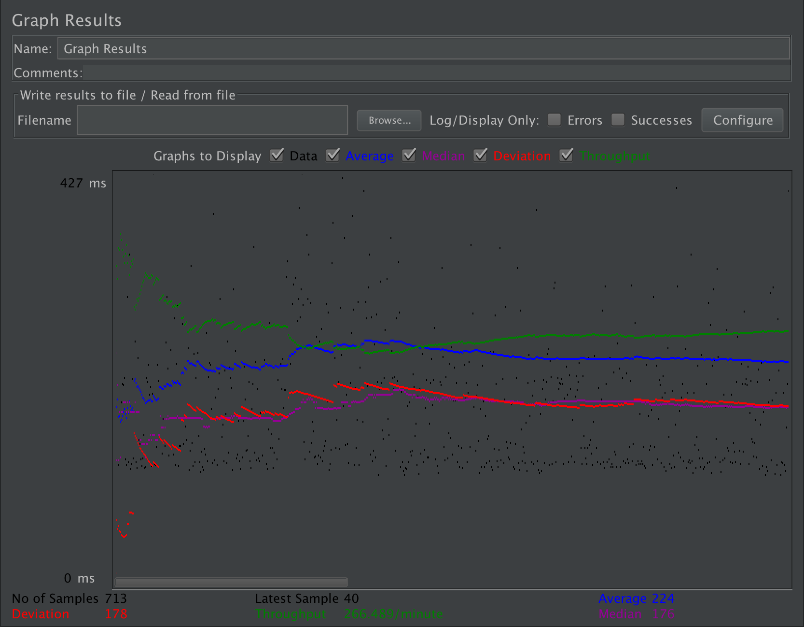
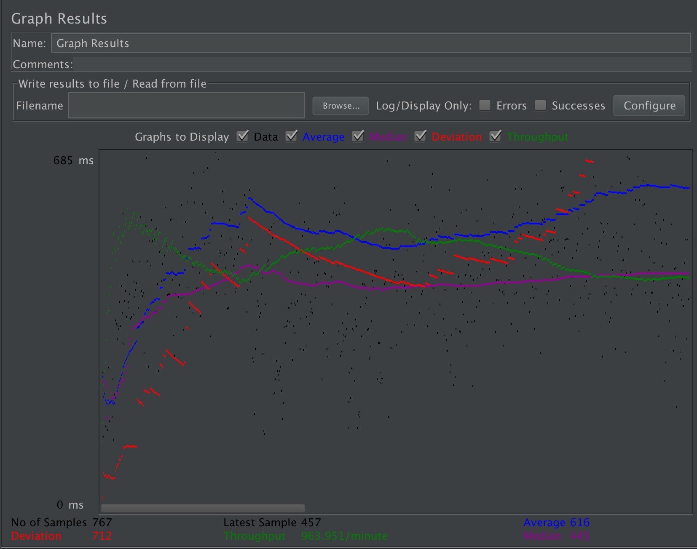
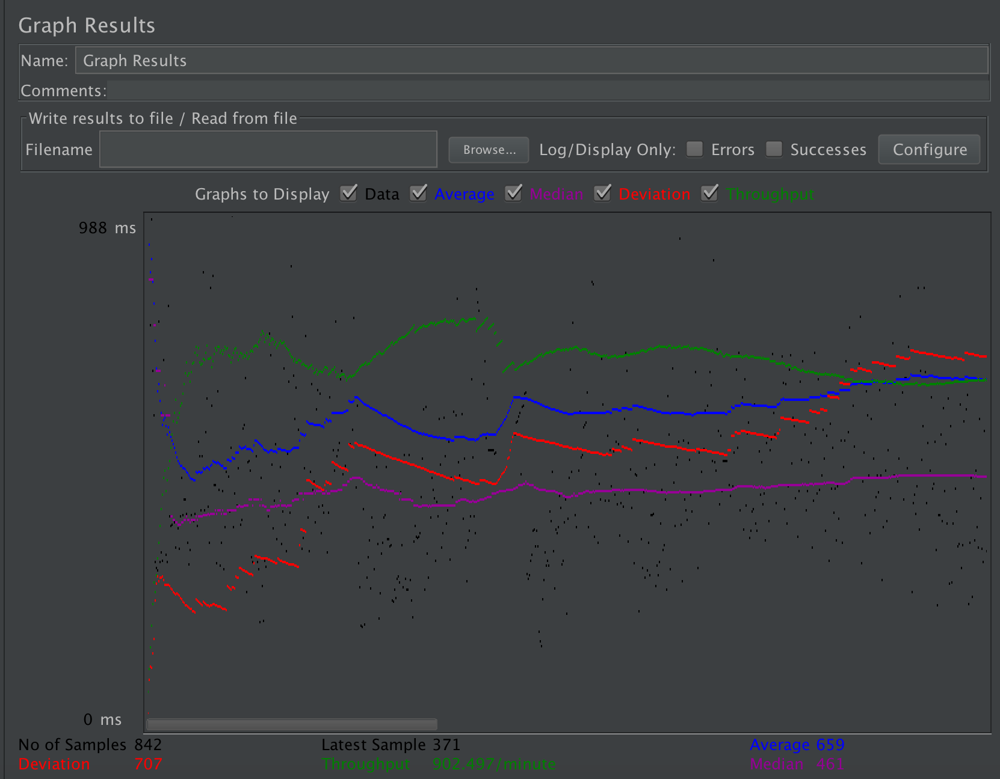
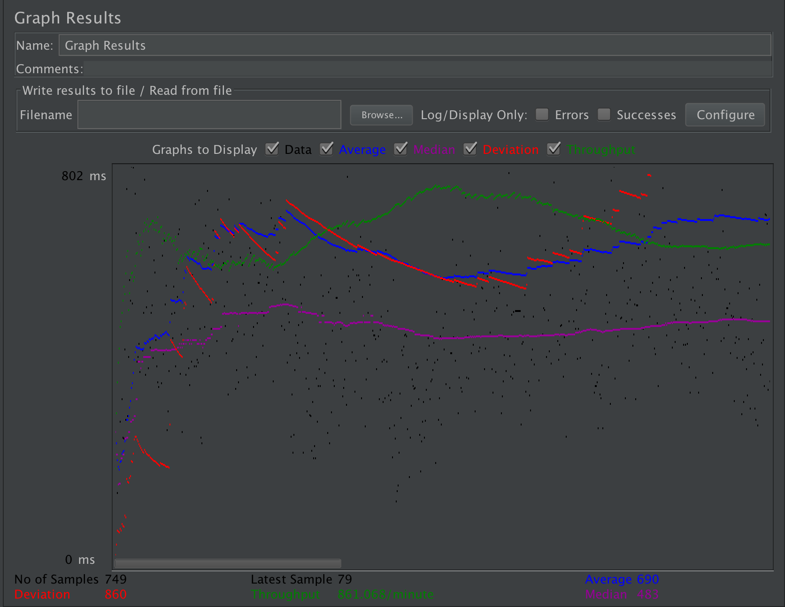
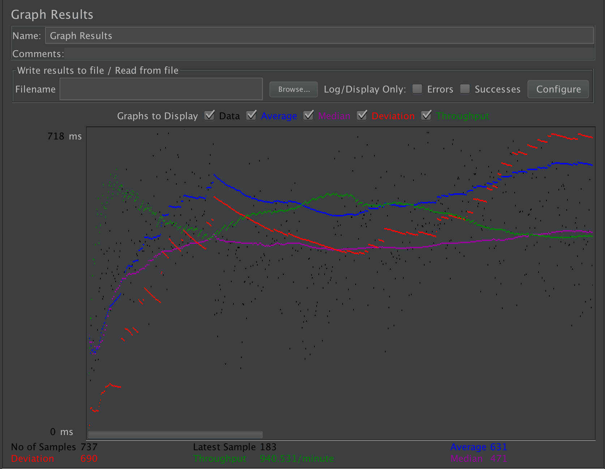
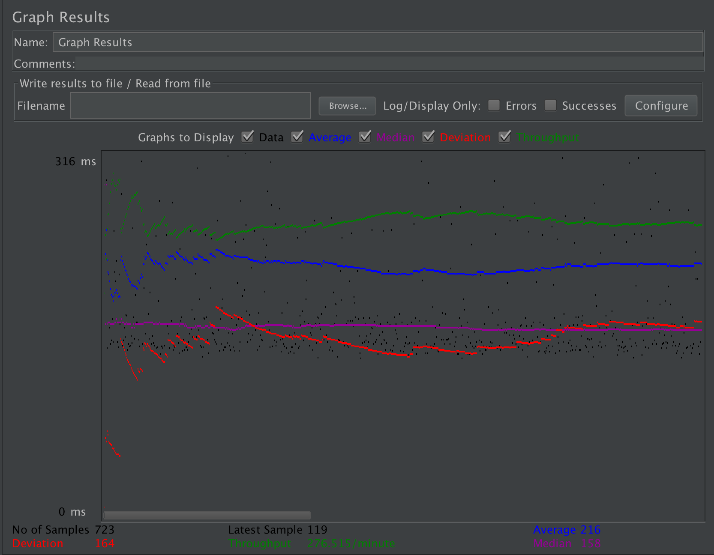
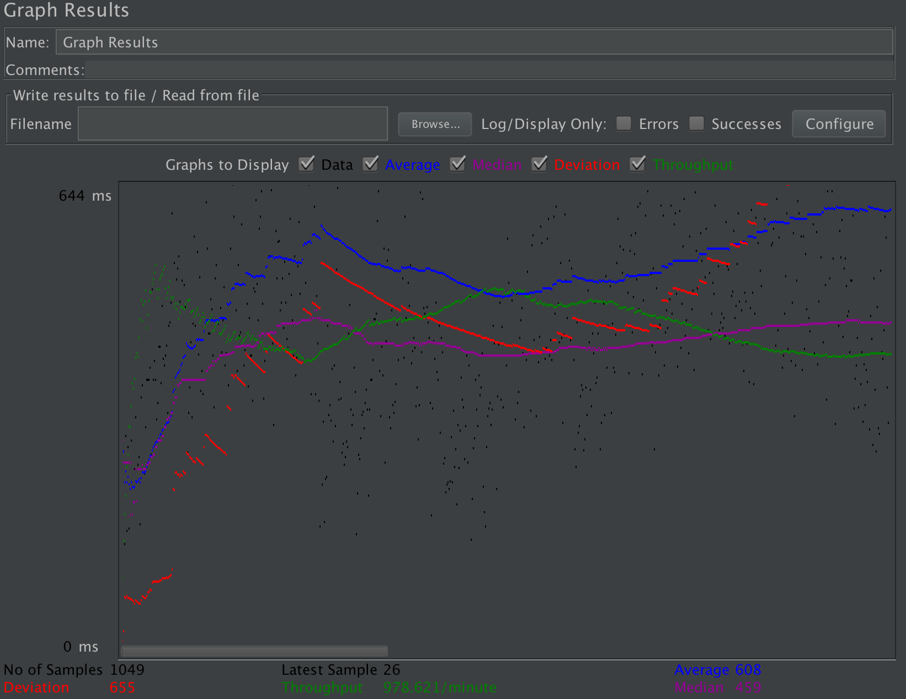
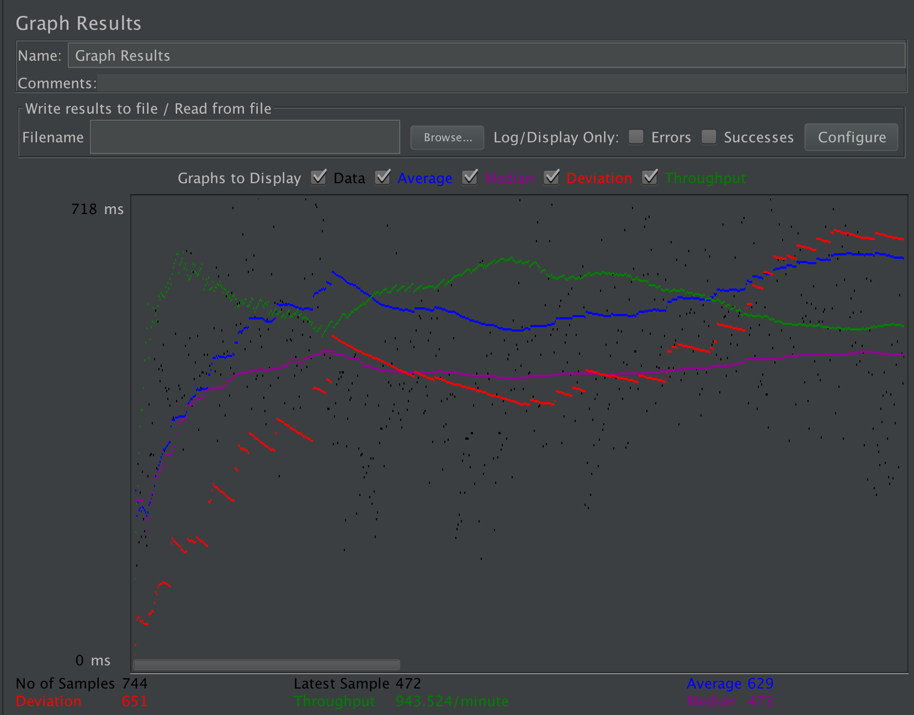
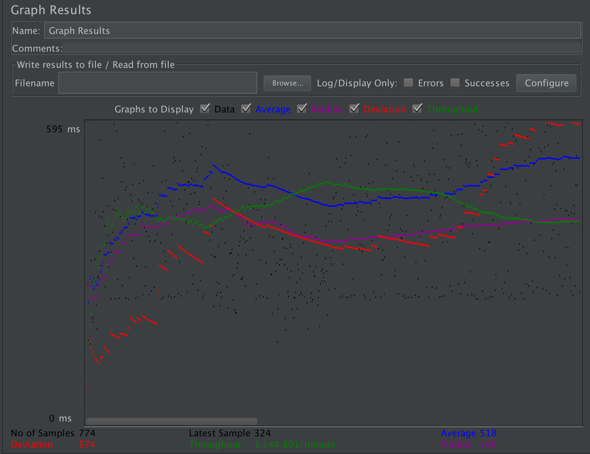

| Single-instance version cases | Graph Results Screenshot | Average Query Time(ms) | Average Search Servlet Time(ms) | Average JDBC Time(ms) | Analysis |
| Case 1: HTTP/1 thread |  | 224ms | 64.263922ms | 19.492112ms | When only 1 thread and using prepared statement and connection pooling, the average time is most quick. There's no load. |
| Case 2: HTTP/10 threads |  | 616ms | 386.329496ms | 301.949871ms | There is a little improvement than the no connection-pooling version. |
| Case 3: HTTPS/10 threads |  | 631ms | 291.037361 ms | 287.664467 ms | It is a little quicker than http, but require more time than http to build connections. |
| Case 4: HTTP/10 threads/No prepared statements |  | 690ms | 284.336706 ms | 278.48402 ms | This shows that no prepared statements have a small preformace decreasement. |
| Case 5: HTTP/10 threads/No connection pooling |  | 631ms | 478.178482ms | 367.408377ms | It shows prepared statements have an influence on jdbc speed. It cached the statement in the memory, so there's no need to compile the statement each time. |
| Scaled version cases | Graph Results Screenshot | Average Query Time(ms) | Average Search Servlet Time(ms) | Average JDBC Time(ms) | Analysis |
| Case 1: HTTP/1 thread |  | 216ms | 66.354336 ms | 19.826267 ms | It is nearly same with case 1 in single instance version. Only one instance (instance 3 in my case) handle all requests for sticky session only passes requests to one instance. |
| Case 2: HTTP/10 threads |  | 608ms | 358.613061 ms | 313.646401 ms | prepared statement and connection pooling increases a little towards the servlet time and jdbc time. |
| Case 3: HTTP/10 threads/No prepared statements |  | 629ms | 306.814594ms | 327.617702ms | The average request time is improved a little than single AWS instance, because the full-text search needs login. Sticky session functions and all requests have been propergated to a specific instance. So the time is improved a little than Case 4 in Single-instance version. |
| Case 4: HTTP/10 threads/No connection pooling |  | 518ms | 346.73059ms | 314.76497ms | It has an overall improvement than case 5 in Single-instance version. |